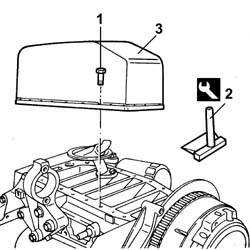
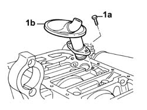
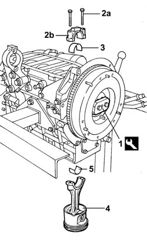
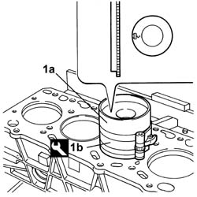
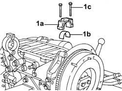
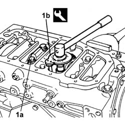

1028H14 PISTON CONNECTING ROD SET - R R
- Path
- Procedures > 10 ENGINE UNIT > 1028 PISTONS AND CONNECTING RODS > 1028H PISTONS AND CONNECTING RODS > 1028H14 PISTON CONNECTING ROD SET - R R
- Kind
- repair procedure (removal / refitting; the operation number is the code)
- Applies to
- engines: 2.8 JTD 8V; all production periods
- Interactive page
- https://sloeber94.github.io/elrnDB-fDct/en/#/244000690
Applies to: engines: 2.8 JTD 8V; all production periods
 Removing
Removing
 Refitting
Refitting1. Undo the bolts fixing the crankcase sump.
2. Cut the sealant using the tool
 | Description | Code | Function |
|---|---|---|---|
2 | Blade | 1.870.718.000 | Detatch sump from crankcase |
3. Remove the crankcase sump.

Applies to: engines: 2.8 JTD 8V; all production periods
1. Undo the bolts (1a) and remove the engine oil intake duct (1b) releasing it from its housing.

Applies to: engines: 2.8 JTD 8V; all production periods
- Fit the tool.
| Description | Code | Function |
|---|---|---|---|
1 | Flange | 1.860.815.000 | Crankshaft rotation |
- Rotate the crankshaft using the tool fitted previously until the cylinder concerned is at B.D.C.
2. Undo the bolts (2a) and remove the connecting rod cap (2b).
3. Remove the lower connecting rod half-bearing.
4. Remove the connecting rod-piston assembly.
5. Remove the upper connecting rod half-bearing.
- Carry out the same operations to remove the pistons and connecting rods for the remaining cylinders.

Applies to: engines: 2.8 JTD 8V; all production periods
Refitting
Removing- Rotate the crankcase through 90° on the overhaul stand.
- Rotate the crankshaft until the cylinder concerned is at B.D.C.
1. Fit the piston-connecting rod assembly (1a) complete with half-bearing using the tool (1b).
| Description | Code | Function |
|---|---|---|---|
1b | Fitting tool | 1.860.700.000 | Piston ring fitting |

Applies to: engines: 2.8 JTD 8V; all production periods
- Rotate the crankcase through 90° on the overhaul stand.
1. Fit the connecting rod cap (1a) complete with half-bearing (1b) and secure it without tightening the bolts (1c).
- Carry out the same operations to refit the pistons and connecting rods for the remaining cylinders.

Applies to: engines: 2.8 JTD 8V; all production periods
1. Tighten the connecting rod cap bolts (1a) to the recommended torque using the angular tightening tool (1b).
 | Value - daNm | Fastening | Component | Ø |
|---|---|---|---|---|
1a | 4,5 - 5,5 + 63° | Bolt | CONNECTING ROD CAPS | M12 |
| Description | Code | Function |
|---|---|---|---|
1b | Torque wrench | 1.860.942.000 | Connecting rod cap bolt tightening |

Applies to: engines: 2.8 JTD 8V; all production periods
- Remove the tool.
| Description | Code | Function |
|---|---|---|---|
. | Flange | 1.860.815.000 | Crankshaft rotation |
- Fit the engine oil intake and tighten the fixing bolts.
- Apply sealant to the entire perimeter of the crankcase sump.
 | Description | Qty. | Component | Type | Classification |
|---|---|---|---|---|---|
. | Dow Corning 7091 | - | OIL SUMP | Silicone sealant | - |
- Fit the crankcase sump.
- Tighten the bolts fixing the crankcase sump to the recommended torque.
| Value - daNm | Fastening | Component | Ø |
|---|---|---|---|---|
. | 1,8 | Bolt | OIL SUMP | M8 |